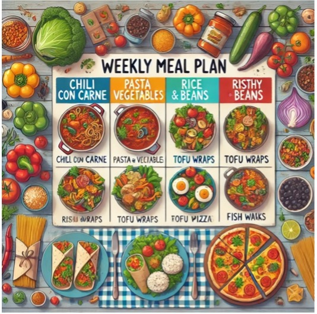

Få styr på din madlavning med en madplan
Kender du følelsen af at stå i supermarkedet og ikke vide, hvad du skal lave til aftensmad? Det kan være en udfordring at finde tid og inspiration, især når man er studerende med et stramt budget. En madplan kan være løsningen.
En madplan gør det muligt for dig at planlægge dine måltider for ugen, så du kan spare både tid og penge. Ved at have en klar plan mindsker du risikoen for impulsindkøb og madspild. Du kan også inkludere sunde opskrifter, der holder dig mæt og tilfreds.
Lad os tage et kig på, hvordan en typisk madplan kunne se ud for en studerende. Her er et eksempel på en madplan for en uge, der kombinerer nemme, billige og sunde retter:
| Dag | Ret | Ingredienser |
|---|---|---|
| Mandag | Chili con Carne | Hakket oksekød, bønner, tomater, krydderier |
| Tirsdag | Pasta med grøntsager | Fuldkornspasta, broccoli, gulerødder, olivenolie, parmesan |
| Onsdag | Kylling og grøntsager i gryde | Kyllingelår, diverse grøntsager, krydderier |
| Torsdag | Ris og bønner | Ris, bønner, grøntsager, krydderier |
| Fredag | Wraps med tofu og salat | Tortillas, tofu, salat, agurk, tomat |
| Lørdag | Sund pizza | Fuldkornsbund, tomatsauce, grøntsager, ost |
| Søndag | Fiskefrikadeller med kartofler | Fiskefars, kartofler, remoulade, salat |
Brug ovenstående som inspiration, eller følg den slavisk; pointen er, at en madplan gør hverdagen en del lettere og mere overskuelig. Du kan altid tilpasse opskriften efter dine præferencer og budget. At have en madplan gør det nemmere at handle ind, og du vil hurtigt opdage, hvor meget tid og penge du kan spare. Hold øje med magasinet hver uge for nye madplaner, eller tilmeld dig nyhedsbrevet i formularen på forsiden! Hvis du følger dette, kan du med garanti fokusere mere på studierne og mindre på madlavning og planlægning.